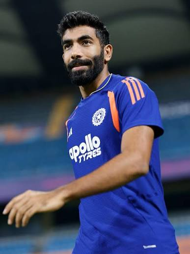

Jasprit Bumrah is one of the world's finest fast bowlers and a key player for the Indian Cricket Team and Mumbai Indians (MI). He is famous for his unique bowling action, deadly yorkers, exceptional accuracy, and ability to perform under pressure. Bumrah has played a major role in Mumbai Indians' IPL success and is regarded as one of the greatest fast bowlers in modern cricket.
| Details | Information |
|---|---|
| Full Name | Jasprit Jasbirsingh Bumrah |
| Date of Birth | 6 December 1993 |
| Birth Place | Ahmedabad, Gujarat, India |
| Nationality | Indian |
| Role | Fast Bowler |
| Batting Style | Right-Handed |
| Bowling Style | Right-arm Fast |
| Jersey Number | 93 |
| IPL Team | Mumbai Indians (MI) |
| Category | Record |
|---|---|
| Matches | 140+ |
| Wickets | 170+ |
| Best Bowling | 5/10 |
| Economy Rate | Excellent |
| Runs | 70+ |
| IPL Team | Mumbai Indians |
Jasprit Bumrah has represented India in Test, ODI, and T20I cricket. His pace, deadly yorkers, and consistency have made him one of the toughest bowlers to face. He has delivered many match-winning performances for India in all formats.
Jasprit Bumrah is an inspiration for young fast bowlers around the world. His hard work, discipline, and exceptional bowling skills have made him one of India's greatest pace bowlers. He continues to bring success to both India and Mumbai Indians with his outstanding performances.